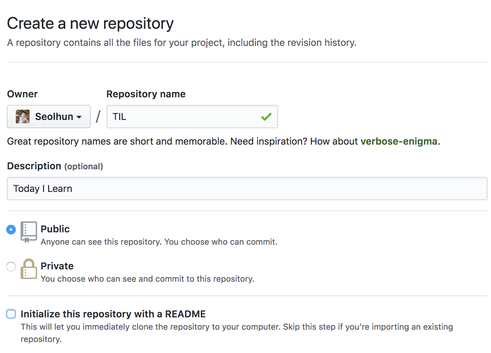
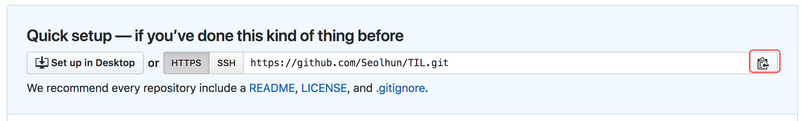

Git Basic
이번 페이지에서는 설치부터, Git에 간단한 Command를 이해하고 실습해보는 시간을 가져볼까 합니다. 실습내용으로는, 가장 기초적인 TIL Repository를 Github에 만들예정이며, 해당 Repository를 통해 앞으로 여러분이 학습하고 작성되는 코드를 잘 관리하기를 바랍니다.
해당 내용을 나아가기에 앞서, Git에서 알아야되는 기본적인 3가지 영역에 대해서 숙지하고 가겠습니다.

이미지에서 보았듯이 위 3가지 영역이 Git에서 관리한다는 사실을 알아야 합니다.
- Working Directory(Tree)
- Staging Area
- (Local) Repository
위 사항을 인지하였다면, 마지막으로 1가지 사항을 더 인지해야 합니다. (Remote) Repository입니다. Remote Repository를 하나의 물리적인 서버에서 각각의 Local Repository에 대한 내용을 통합하여 관리하는 것입니다. 현재는 Github와 같은 서비스에서 Cloud로 쉽게 접근하여 관리할 수 있도록 만들어주었습니다. 이와 같은 Repository를 Remote Repository라 하며, 이를 포함한 총 4개의 영역을 숙지하셔야 합니다.
이제 4가지 영역을 머리속에 가지고 계신다면 이제, init, add, commit, push에 대해서 알아보겠습니다.
Configuration
Git을 설치하고 나서 가장 먼저 해야 하는 것은 사용자 이름과 이메일 주소를 설정하는 것입니다. Git은 커밋할 때마다 이 정보를 사용하는데, 한번 커밋 후에는 커밋에 대한 해당 정보를 변경할 수 없습니다.
$ git config --global user.name "Seolhun"
$ git config --global user.email shun10114@gmail.com
$ git config --list
해당 name과 email은 github에 가입되었던 내용으로 입력해주시면 더 편리하게 작업할 수 있습니다.
Init
해당 디렉토리에서 git의 tracking을 시작하겠다는 명령어입니다. 숨김 파일을 보면 .git 디렉토리가 생성됨을 알 수 있습니다.
.git 디렉토리에는 git의 설정 및 작동되는 정보들에 대한 데이터가 관리됩니다. .git 디렉토리를 지우면 기존에 있던 Local Reository에 대한 모든 정보가 사라집니다.
$ cd ~/git
$ mkdir TIL
$ git init
Add
Working Tree에 관리되는 File을 Indexing하여 Staging Area에 올려 놓습니다. add된 file은 git status로 확인 할 수 있습니다.
$ echo > index.html "<h2>Seolhun</h2>"
$ git status
$ git add index.html
$ git status
add 전후의 status 명령어를 통해 확인하면, 파일의 상태가 어떻게 변하였는지를 알 수 있습니다.
Tip - *와 .의 차이
add *는 현재 디렉토리에 있는 모든 파일들(.으로 시작되는 파일명을 제외한)을 추가한다는 의미입니다. * 명령어는 linux shell의 명령어로 git은 파일 목록만 받는 것입니다.
add .는 전체 디렉토리 파일 모두를 재귀적으로 추가합니다.(.으로 시작되는 파일명도 포함합니다.)
$ echo > .test "test"
$ git add *
$ git status
$ git add .
$ git status
Commit
Staging Area에 올려진 파일들을 Local Repository로 이동시킵니다.
$ git add *
$ git commit -m "First Commit"
$ git commit -m "Message" -m "Description"
-m은 message라는 약어입니다. commit에 대한 내용을 간단히 입력해주세요. 더 자세한 내용을 기록하고 싶으면 -m을 한번 더 사용하여 Description을 채워주세요.
Push
Local Repository에 있는 File들을 Remote Repository로 전송합니다.
$ git push origin master
origin은 remote repository와 연결된 주소의 이름입니다. origin이 default 값이며, 이를 본인 혹은 팀 규칙에 맞게 변경하여 사용할 수 있습니다.
아마 정상적으로 작동되지 않을 것입니다. 왜냐하면, 위에서 언급했듯이 기본적으로 Git에는 Remote Repository가 연결되지 않기 때문입니다. 어느 Remote Repository를 연결할지 개발자가 직접 지정해주어야 합니다. Github에 Remote Repository를 만들고 현재 Local Repository와 연결해봅시다.
Remote Repository 만들기
1. Git을 설치합니다.
- 맥은 Homebrew
brew install git
- 윈도우는 Git-Download
2. GitHub를 가입합니다.
- 오픈소스에 세계에 오신것을 환영합니다.
3. GitHub에 Remote Repository를 생성합니다.
- 녹색으로 보이는
NewButton을 눌러줍니다.
아래를 참고하여 TIL Rpository를 만들어봅니다.
만들어진 Repositroy에 Path를 복사합시다.

4. Local Repository에 Remote Repository를 연결합니다.
$ git remote -v
$ git remote add origin ${복사한 주소}
$ git remote -v
기본 Remote Repository에 기본이름은
origin으로 설정되어있습니다. 첫 연결 후 명령어를 제외하고는 origin은 default 값이므로 push나 pull 등에 remote repository와 작업 할 때 지정을 하지 않으면 기본적으로 origin을 바라보게 됩니다.
TIL 폴더(Local Repository)와 Remote Repository가 연결되었으면 다시 한번 git push를 해봅니다.
$ git push origin master
Push가 정상적으로 작동되었으면, Github Remote Repository에 들어가서 정상적으로 반영이 되었는지 확인해봅시다. 정상적으로 들어갔다면 이번 미션을 잘 달성하셨습니다.
이상 기본적으로 Git Command에 대한 내용을 알아보았으며, 차후에 Merge, Pull과 같은 명령어에 대해 더 알아보도록 하겠습니다.